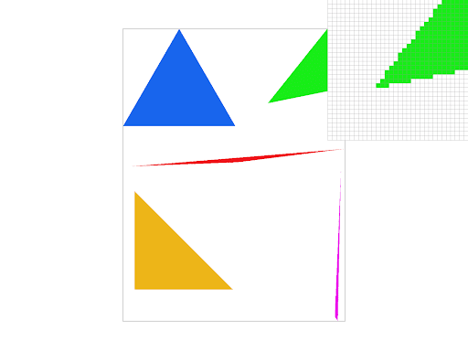
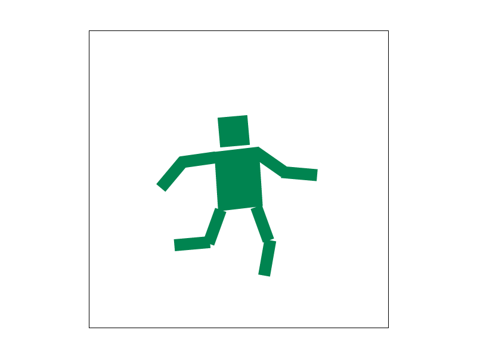
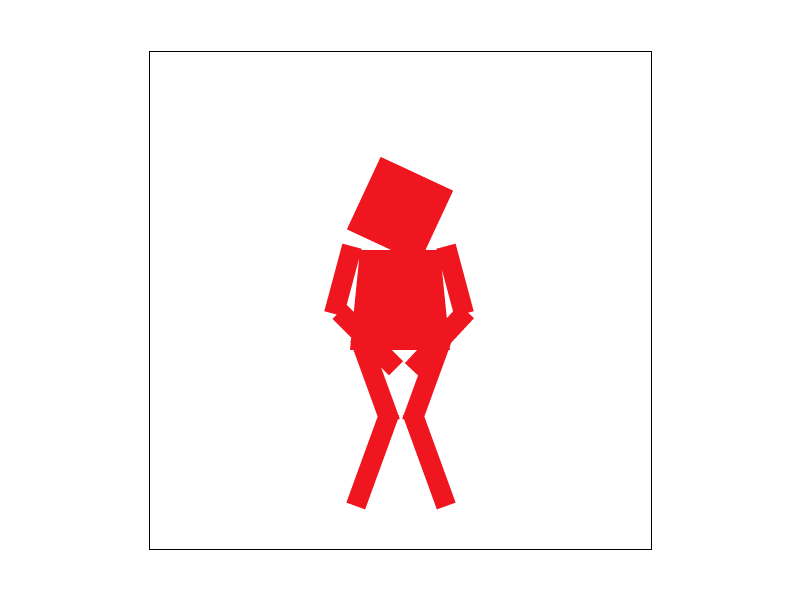
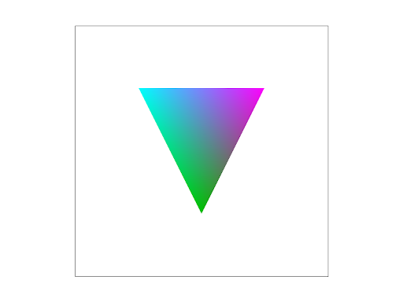
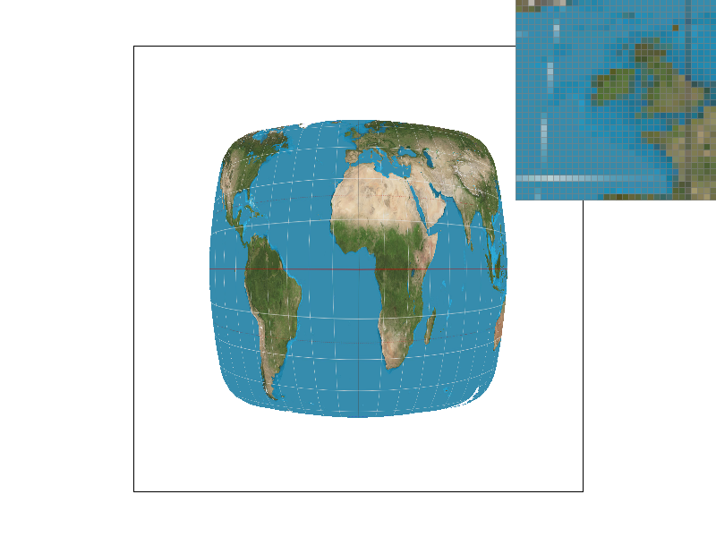
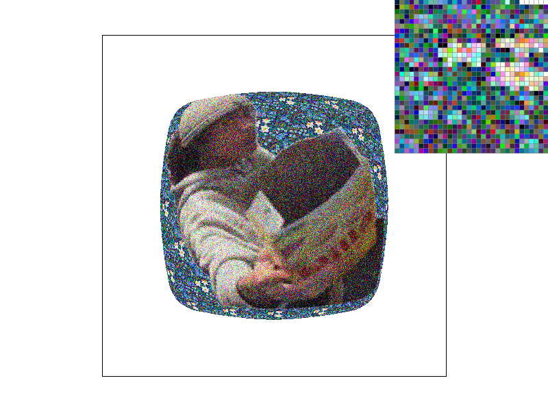
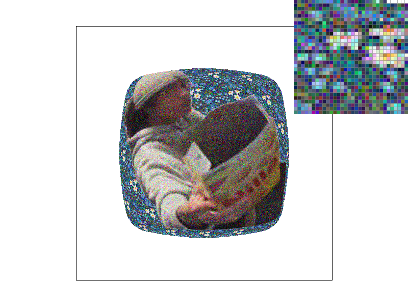

Triangle Rasterization Write-Up
CS184/284A Spring 2025
Overview
Give a high-level overview of what you implemented in this homework. Think about what you've built as a whole. Share your thoughts on what interesting things you've learned from completing the homework.Task 1: Drawing Single-Color Triangles
Our triangle rasterization begins by analyzing the vertices of a given triangle: we find the minimum and maximum values for both X and Y between the three points of the triangle. Using those four values, we construct a bounding rectangle around the triangle. We then iteratively look through each point in the rectangle to see whether it’s located inside of the triangle, using the point-in-triangle test provided in lecture: \[L_i(x,y)=–(x-X_i) dY_i+(y-Y_i)dX_i=A_ix+B_iy+C_i\] This involves checking whether each point lies inside an edge \((L_i)\) for all three edges \((L_{0, 1, 2})\) of the triangle. Solving for \(L\) tells us whether a given point lies inside or outside of the triangle— though this determination depends on whether the vertices are checked in clockwise or counter-clockwise order. That is to say, for a point inside of the triangle, \(Li(x,y)≥0\) for clockwise rotation and \(Li(x,y)≤0\) for counter-clockwise rotation. Thus the runtime of our algorithm is that of checking each sample within the bounding box of the triangle.

Triangle rasterization, with highlighted jaggies
With that implementation, we were able to rasterize SVG files, accurately filling in the triangles but producing noticeable jaggies.
Task 2: Antialiasing by Supersampling
Supersampling creates a higher-definition rendering of an image that can be down-sampled. The process of down-sampling creates averaged values for each pixel. This is useful because when pixels fall on the edge of a triangle, jaggies can be formed, or thin parts of a triangle can disappear. Therefore, supersampling can be used to create a clearer image of a rendered shape.
In order to implement supersampling for our triangle rendering, we use the sample_buffer array to hold the color values of every subpixel. To fill the sample_buffer, for every pixel we use sample_rate to calculate the amount of the subpixel regions within that pixel. For each of these subpixels, we determine whether they are inside the triangle using the same point in triangle method as in task 1, and update the relevant sample_buffer index accordingly. Once all of the subpixel values have been determined, for each individual pixel we get the average value between all its subpixels, then submit that averaged value to the framebuffer. This accomplishes the goal of anti-aliasing by smoothing edges and obliterating jaggies, enhancing image quality.
This process requires a change to different parts of the rasterization pipeline; specifically, we now use a sample_buffer (which is a vector data structure) instead of filling pixels as we sample, and we convert that internal rasterizer buffer to the screenbuffer through value averaging.
Below, the output of basic/test4.svg is shown with increasingly high sample rates:
Sample rates from left to right — 1, 4, 16
With higher sample rates we get more information for every pixel in the framebuffer (since there are more subpixels for higher rates). Thus higher sampling rates result in a smoother looking edge since we filter out higher frequencies and retain more subpixel info than we could with lower sampling rates.
Task 3: Transforms
Our next task was to implement the ability for our SVG renderer to transform images via scaling, translation, and rotation. In doing this, we were able to morph ten square objects to represent a box-shaped guy.
We further manipulated the cubeman, testing the abilities of our shape manipulation (and just having fun with it). In doing this, we drew inspiration from the design of exit signs, paying homage to the running man often featured on them. We made the box man green and manipulated his arms and legs to appear as if he’s running, tilting the torso and head to further sell the effect.
Running man
We also made another one.
Bros gotta piss
Task 4: Barycentric coordinates
Barycentric coordinates are a system by which the location of a given point can be defined relative to other points. Given points A and B, a barycentric coordinate of \((\frac{A}{2}, \frac{B}{2})\) or \((0.5, 0.5)\) would define a location at the midpoint between the two.
For example, a point within a triangle could be defined by its vertices. Take the following triangle :
In the given image, define the vertices, starting top left and going clockwise, as \(V_A, V_B, V_C\). In a barycentric coordinate system of \((V_A, V_B, V_C)\), the point \((\frac{1}{3}, \frac{1}{3}, \frac{1}{3})\) would define the midpoint of the triangle, the point (1, 0, 0) would lie atop the point \(V_A\), and \((\frac{1}{5}, \frac{1}{5}, \frac{3}{5})\) would be closer to \(V_C\) and further from \(V_A\) and \(V_B\).
This idea can be applied to the triangle to color it, seen below:
Barycentric-coloring of a triangle
In the above image, vertice \(V_A\) has been kept as cyan, \(V_B\) has been colored magenta, and \(V_C\) has been colored green. The points within the triangle then use barycentric coordinates to color in each point so that a point closer to \(V_A\) will be more cyan-colored, a point closer to \(V_B\) will be more magenta-colored, etc. The outcome of this, as seen above, is a color gradient, visually representing the barycentric weights at each point of the shape.
This concept can be extended to create a color wheel:

Barycentric color wheel
Task 5: "Pixel sampling" for texture mapping
Pixel sampling is how we choose a certain color value from a texture for a point on a surface. We implemented it by calculating a texture coordinate and then sample the texture at that coordinate to get a color. In order to map textures onto surfaces, we implemented two triangle texture mapping methods: nearest-pixel and bilinear sampling.
Nearest-pixel sampling involves converting the uv coordinate within the rasterization to a corresponding point in the texture space, rounding to the nearest texel. We then use this texel’s color as the final color for that point. Alternatively, with bilinear sampling we look at the surrounding four texels around the uv coordinate (unless the coordinate is centered to a texel), doing linear interpolation horizontally and vertically. This gives us four values between those texels that we average to be used as the final color.
These different sampling methods are displayed below, at different sampling rates:
|
|
|
|

|
|
There appears to be noticeably more smoothness with bilinear sampling than nearest, mostly in areas where there is high frequency and contrast in colors. This is due to the fact that the bilinear method interpolates between multiple texels versus simply getting the closest texel with nearest-pixel; averaging color values via bilinear sampling produces a more smoothly distributed change in colors, in contrast to nearest-pixel which typically results in a more blocky-looking texture.
Task 6: "Level Sampling" with mipmaps for texture mapping
Level sampling is a graphics rendering process that uses mipmap levels to smooth color variations between pixels and reduce sharp image effects like jaggies. It involves selecting particular levels when applying textures to surfaces. Surfaces further away use lower resolution textures (higher level mipmaps), while closer surfaces use higher resolutions. This results in reduced aliasing and smoother appearances. We implemented it by calculating how much texture coordinates change per pixel using uv coordinate derivatives to calculate the mipmap level.
With pixel sampling, different approaches have different trade-offs. Nearest-pixel sampling is faster but can appear more pixelated, while bilinear performs anti-aliasing better but is more costly. In terms of level sampling, a fixed level (i.e.: mipmap level 0) is fast but may have aliasing, while trilinear filtering has more smooth results but requires more memory and power. This tradeoff exists because a higher number of samples-per-pixel improves antialiasing but also requires more power and memory usage.
To demonstrate the visual efficacy of these methods, we used an image with noise to see how a warped mesh would display the information and smooth out the noise:
|

|

|
|
|
|
As seen above, the addition of level sampling greatly helps reduce the noise in the image, while bilinear pixel sampling further helps reduce the noise and smooth out the edges of shapes at a given level. Zero level-sampling with nearest pixel-sampling produces the noisiest and roughest image, while subsequent images increasingly smooth out and better define the shape of the supplied texture. However, while the bottom-right image best represents the shape of the texture map, the outcome looks blurrier than other results, leading to a trade off between finer image definition and representation of the texture.